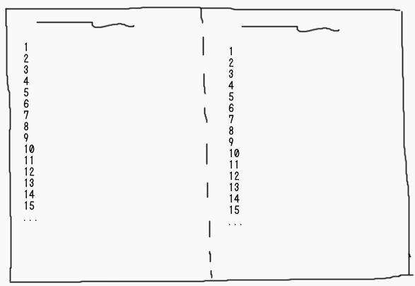
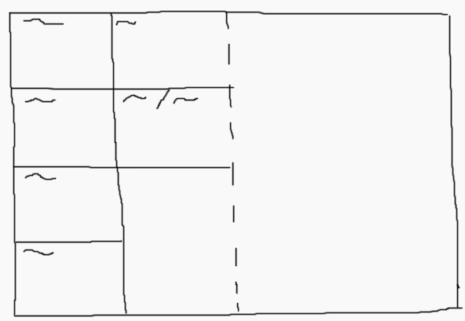
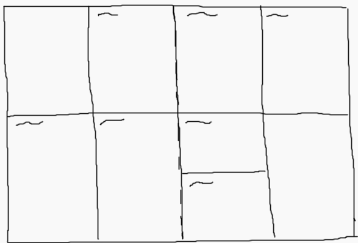
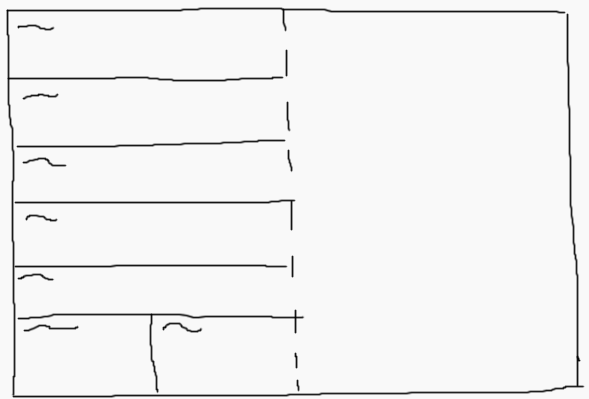
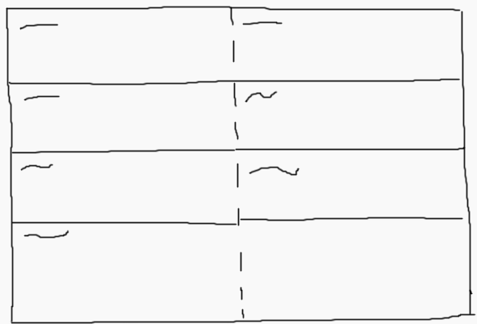
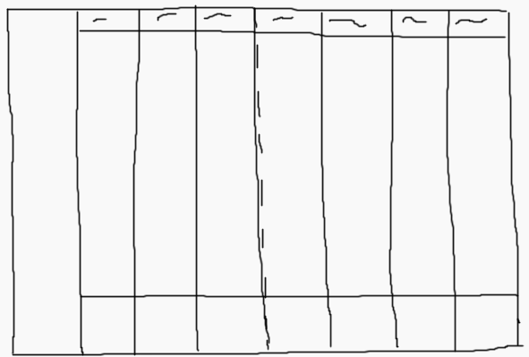
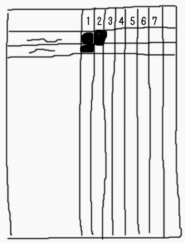
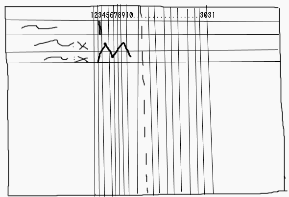
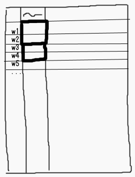

Ideas para agendas
Recientemente empecé/volví a usar agendas de papel por varias razones. Como no tengo tantas citas/eventos, tampoco quiero gastar mucha plata en algo que no voy a usar completamente. Por esta razón, hice mis agendas desde cero.
Así no mas
Agarrás un cuaderno y empezas a escribir. Por ejemplo: como título pones el día y, debajo, las cosas que vas a hacer, en forma de lista. Se puede usar también como inbox.
Al finalizar cada día, haces el del día siguiente siguiendo los pasos de arriba. También podes transcribir la lista de tareas que quedó pendiente.
Esta opción (parecida al Bullet journal) no tiene una forma para marcar eventos recurrentes facilmente.
A simple vista tampoco tiene para anotar los eventos/citas futuras, esto se soluciona poniendo la fecha límite a un costado y/o resaltandolo. O creando un simple calendario adelante (u hojas en blanco) antes de empezar a escribir.
Algunas viñetas/iconitos que se pueden usar para las cosas básicas:
- un círculo para citas/eventos
- un cuadrado para las tareas
- un puntito para las notas
- doble flecha (>>) para diario (si se incluye en la misma agenda)
- una estrella para marcar cosas importantes
- signos de admiración para marcar cosas importantes, que requieren atención, etc.
Un poco más organizado
Capaz que no te gusta el hecho de agarrar el cuaderno y empezar a escribir asi no mas, o necesitas marcar (mas facilmente) fechas futuras (como los feriados) o, simplemente, algo de mas orden.
Vista anual
Se puede usar para marcar vacaciones, feriados, aniversarios, viajes, día de pago, hacer un seguimiento extenso o como índice para las demás vistas.
Se pueden hacer de diferentes formas:
-
Meses en columnas, números en fila. Cantidad de columnas por hoja: a gusto (usualmente 6 o 3)

-
Dos columnas. En la primera hay un calendario, en la segunda se deja el espacio para escribir

-
Cajitas (marcadas o no) con título del mes

-
Hoja/s en blanco y completar a medida que aparezcan
Vista mensual
Lo mismo que lo anual, y, si se tienen pocas citas, se las puede incluir ahi.
- Mes (grilla) en dos páginas
- Mes (grilla) en una página
- Mes (lista) en una página 
La vista mensual puede tener espacio para notas y tareas que se tienen que hacer ese mes. En el diseño de lista, se puede poner en la otra hoja.
Vista semanal
Vista mas común. Se suele poner las citas, eventos y tareas. También como inbox (para tener la fecha de "creación"), mini diario, seguimiento semanal, etc.
- cuadros, en una hoja 
- cuadros, en dos hojas 
- rectangulos, en una hoja 
- rectangulos, en dos hojas 
- columnas en dos hojas (suele incluir horas) 
En estas vistas, es comun tener un espacio para notas (pueden ser notas, gastos, hábitos, tareas, etc), en un cuadradito o en la otra hoja.
Vista diaria
Existen varios diseños para maximizar el uso. Lo normal es tener las tareas y las citas (en una columna con horas). También puede tener una página a la derecha para las notas.
Se puede incluir algun seguimiento diario como consumo de agua, ejercicio, comidas, humor, y, para decorar, el clima.
No se está limitado a eso, también se puede tener todo lo anterior en una sola página. Algunas agendas simplemente ponen el dia como título y dejan un gran espacio en blanco para que lo puedas usar como gustes. Ejemplos de estos pueden ser: Hobonichi Techo (ほぼ日手帳) y el Bullet journal.
Tracking/seguimiento, tareas, hábitos
Existen varios programas para celulares que hacen esto, pero si queres hacerlo en papel, acá tenes ideas.
Seguimiento diario/semanal
En una grilla, separar en 8 columnas. La primera (grande) para colocar las tareas o lo que se quiera seguir, las demas para los días de la semana. Se pinta el cuadrado o se marca con un puntito para luego hacer un gráfico.
Esto puede ser usado para tareas diarias, asi no se tiene que escribir una y otra vez lo mismo.

Seguimiento mensual
En una grilla, separar en 31-32 columnas. La primera (grande) para colocar las tareas o lo que se quiera seguir, las demas para los días del mes. Se pinta el cuadrado o se marca con un puntito para luego hacer un gráfico.
Puede ser usado para un seguimiento mas exhaustivo, como ejercicio, estudio, peso, etc.

Seguimiento varias semanas
En una grilla separar 53 filas (para las semanas) y, las columnas, para las tareas (o al revés).
Se marca la tarea que se deba hacer, teniendo en cuenta que un cuadrado equivale a una semana. Por ejemplo, "lavar toallas" cada dos semanas se marcaria remarcando dos cuadrados en donde estan las semanas. Una vez completada, se colorea ese rectangulo.

How to comment
- Tweet with an URL to this post (
http://blog.aquinzi.com/./es/planner-ideas/) - Write a post linking here and send me a Webmention.
- With disqus